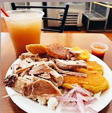
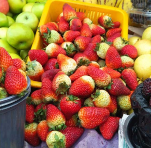
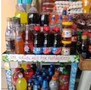

Sobre Nosotros

Somos un mercado que a lo largo de los años se ha situado como un lugar turístico en la ciudad de Tulcán que ha recibido a miles de turistas extranjeros y nacionales cada año desde 1935, a que disfruten de nuestra variada gastronomía. El Mercado Plaza Central de Tulcán no solo se ha destacado por las diferentes comidas típicas que ofrece, sino que también por la variedad de eventos culturales que se realizan de la mano con las entidades públicas de la ciudad; desarrollando actividades de unión con le pueblo tulcaneño para fomentar la participación ciudadana y la cultura. Nuestra visión es continuar siendo un ejemplo de disciplina y tradición a nivel cantonal y nacional atendiendo desde el corazón a cada uno de nuestros visitantes.
Nuestros servicios
Comida Tradicional
Brindamos con todas las delicias procias de nuestra ciudad.
Mercado
Contamos con los productos de mercados más frescos con relación calidad-precio para todos nuestros clientes.
Víveres
Ofrecemos los víveres con mejor calidad ideales para nuestros clientes de todas las edades.